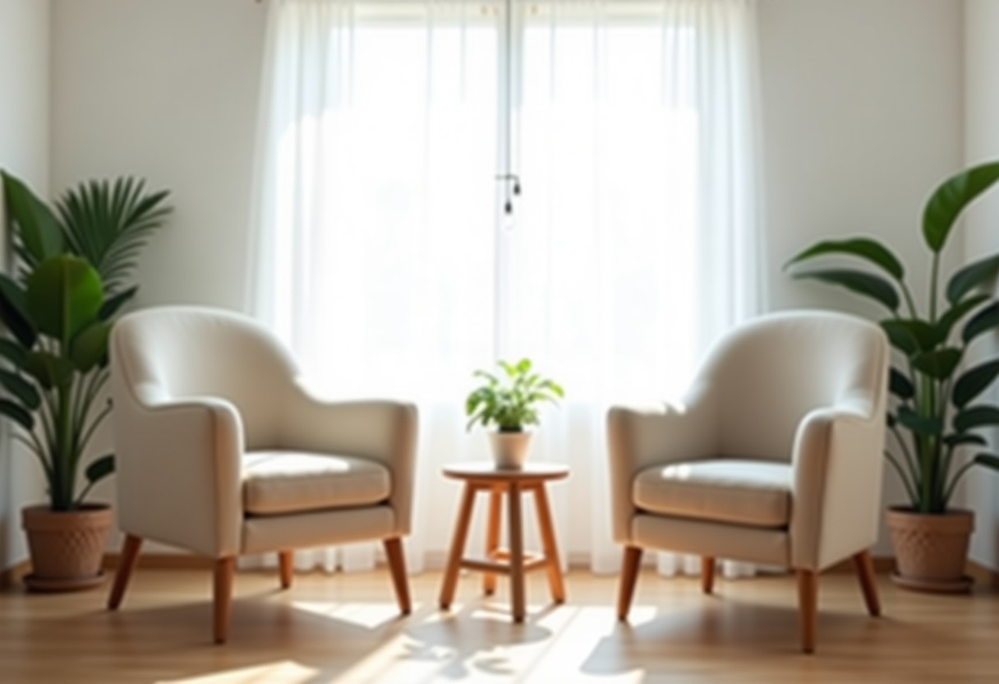
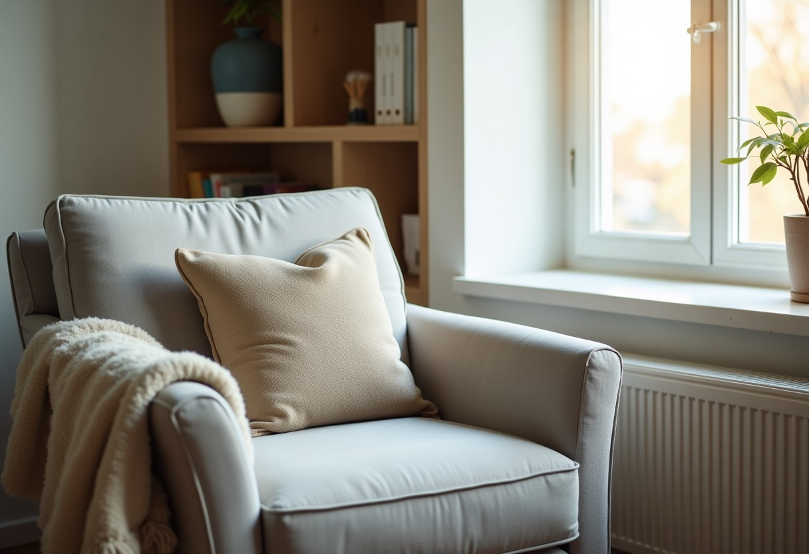
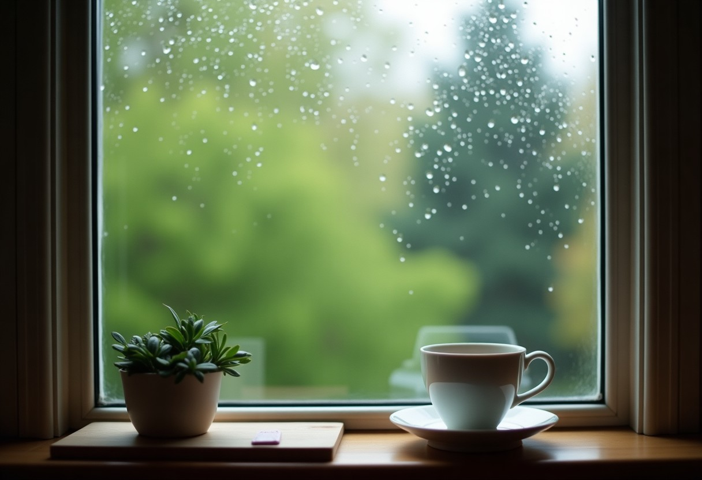
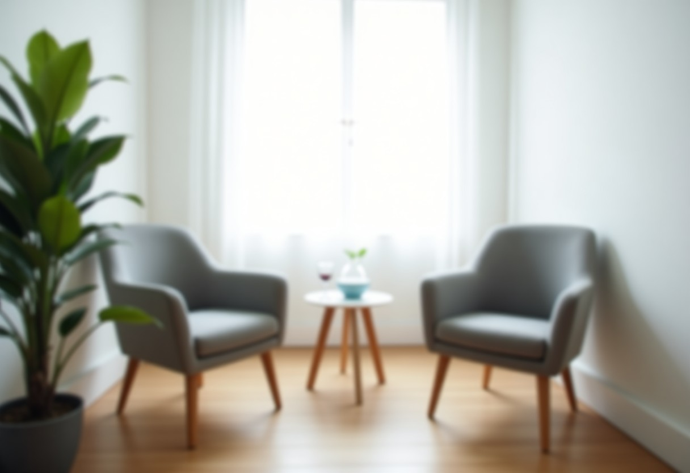

Seferihisar'da yüz yüze, Türkiye'nin her yerinden ve yurt dışından online psikoterapi. Kaygı, depresif duygudurum, stres, ilişki ve yas süreçlerinde yetişkinlerle çalışıyorum.
Randevu talebi Nefes molası
Her alan yayında ayrı bir bilgilendirme sayfasıdır; Google'da bu konularla arayanlar doğrudan ilgili sayfaya ulaşır.
Sürekli endişe, panik atak, sosyal kaygı. Kaygının nasıl çalıştığını anlamak ve onunla baş etme becerileri.
İsteksizlik, umutsuzluk, enerji kaybı. Adım adım yeniden işlevselliğe dönmeyi hedefleyen görüşmeler.
İş, bakım verme ya da yoğun dönemlerin yarattığı yük; sınır koyma ve kendine bakım.
Yakın ilişkilerde iletişim, güven ve tekrar eden çatışmalar üzerine bireysel çalışma.
Kaza, kayıp, şiddet gibi zorlayıcı yaşantıların ardından güvenli bir alanda ilerleyen süreç.
Bir yakını, ilişkiyi ya da hayatın bir dönemini kaybetmenin ardından yasın kendi temposunda yaşanması.
Kendini yetersiz hissetme, mükemmeliyetçilik, karar vermekte zorlanma.
Göç, uyum, yalnızlık ve iki kültür arasında kalma; Türkçe konuşmanın rahatlığıyla online görüşme.
Alan listesi örnektir; sizin çalışma alanlarınız ve kullandığınız terapi yaklaşımlarıyla güncellenir.
Görüşme şeklini ve size uygun zamanı seçin. Talebiniz WhatsApp'tan iletilir; uygun saat teyit edilerek size dönülür.
Bu formda sağlık bilginizi paylaşmanız gerekmez; ayrıntıları görüşmede konuşuruz.

Görüşme saatleri örnektir; çalışma saatlerinize göre düzenlenir.
Her bölge yayında ayrı bir sayfadır; "Urla psikolog", "Güzelbahçe psikolog", "online Türkçe psikolog" aramalarında görünmeniz için hazırlanır.
Turabiye'deki çalışma adresine Sığacık, Ürkmez ve Doğanbey'den kısa sürede ulaşılır.
Yol tarifi →Urla merkezden Seferihisar yolu üzerinden yaklaşık yarım saat; dilerseniz online görüşme.
Yol tarifi →Güzelbahçe'den Seferihisar'a otoyol ve sahil yolu; yüz yüze ya da online.
Yol tarifi →Türkiye'nin her yerinden ve yurt dışından Türkçe görüntülü görüşme.
Online randevu →Duygularımızı en rahat anadilimizde anlatırız. Bulunduğunuz ülkeyi seçtiğinizde seans saatleri kendi saatinize çevrilir. Görüşmeden önce kontrol edin:
Dünyada yaygın kullanılan iki kısa tarama ölçeği. Cevaplarınız yalnızca bu cihazda hesaplanır, hiçbir yere gönderilmez ve kaydedilmez. Sonuç bir tanı değildir; yalnızca bir uzmanla görüşmenin yararlı olup olmayacağı konusunda fikir verir.
Son 2 hafta içinde aşağıdaki sorunlar sizi ne sıklıkla rahatsız etti?
1. Bir şeyler yapmaya karşı ilgi ya da zevk duymama
2. Kendini çökkün, depresif ya da umutsuz hissetme
3. Uykuya dalmakta ya da uykuyu sürdürmekte güçlük, ya da çok fazla uyuma
4. Yorgunluk ya da enerji azlığı hissetme
5. İştahsızlık ya da aşırı yemek yeme
6. Kendini kötü hissetme; başarısız biri olduğunu ya da kendini veya aileni hayal kırıklığına uğrattığını düşünme
7. Gazete okumak ya da televizyon izlemek gibi şeylere dikkatini vermekte güçlük
8. Başkalarının fark edebileceği kadar yavaş hareket etme ya da konuşma; ya da tam tersine, her zamankinden çok daha huzursuz ve kıpır kıpır olma
9. Ölmüş olmanın ya da kendine bir şekilde zarar vermenin daha iyi olacağını düşünme
PHQ-9: Kroenke K, Spitzer RL, Williams JB. Ücretsiz kullanıma açık tarama ölçeğidir. Sonuç tanı yerine geçmez.
Kutu nefesi: 4 saniye nefes alın, 4 saniye tutun, 4 saniye verin, 4 saniye bekleyin. Kaygının yükseldiği anlarda bedeni sakinleştirmeye yardımcı olabilir. Başınız dönerse bırakın ve normal nefesinize dönün.
Psikoloğa ilk kez gelmek çoğu kişi için zordur. Sürecin nasıl ilerlediğini bilmek kaygıyı azaltır.
Görüşmede konuşulanlar mesleki gizlilik kapsamındadır. Kişisel verileriniz 6698 sayılı KVKK'ya uygun işlenir; izniniz olmadan kimseyle paylaşılmaz. Online görüşmeler kayıt altına alınmaz.
Adınızı yazmadan genel bir soru iletebilirsiniz (ör. "online görüşme nasıl ilerler?"). Lütfen kişisel sağlık ayrıntısı yazmayın.
Soruyu iletSade, bilgilendirici yazılar; Google'da bu sorularla arayanlar sitenize ulaşır. Yazıları yönetim panelinden kendiniz ekleyip düzenlersiniz.

Ne zaman olağan, ne zaman destek almak gerekir?
Göçün duygusal yükü ve anadilde konuşmanın önemi.
Aynı tartışmanın neden tekrar tekrar döndüğünü anlamak.
Deneyin: başlık ve kısa özet yazıp ekleyin, yazı hemen listede görünür. (Bu önizlemede yalnız sizin cihazınızda saklanır; yayında şifreli yönetim ekranınızdan yapılır.)
Psikiyatrist tıp doktorudur ve ilaç tedavisi planlayabilir. Klinik psikolog psikoterapi ve psikolojik değerlendirme yapar; ilaç yazmaz. Gerektiğinde iki uzman birlikte çalışır.
Pek çok kişi için online görüşme rahat ve uygun bir seçenektir. Hangi yolun size uygun olduğuna ilk görüşmede birlikte karar verilir.
Seans süresi ve sıklığı ilk görüşmede birlikte belirlenir ve size açıkça bildirilir.
Randevu WhatsApp ya da e-postayla ayarlanır; saatler bulunduğunuz ülkenin saatine göre teyit edilir.
Seferihisar'da yetişkinlerle yüz yüze, Türkiye'nin her yerinden ve yurt dışından online psikoterapi görüşmeleri yapıyorum.

Turabiye Mah. 52/4. Sk. No: 62 B Blok D: 7, Seferihisar / İzmir
Yol tarifi WhatsApp360° GÖRÜNÜM
Görüntüyü fareyle ya da parmağınızla çevirin; bulunduğumuz sokağı ve girişimizi 360° gezin, gelirken zorlanmayın.
Görüntü: Google Street View · Yol tarifi al